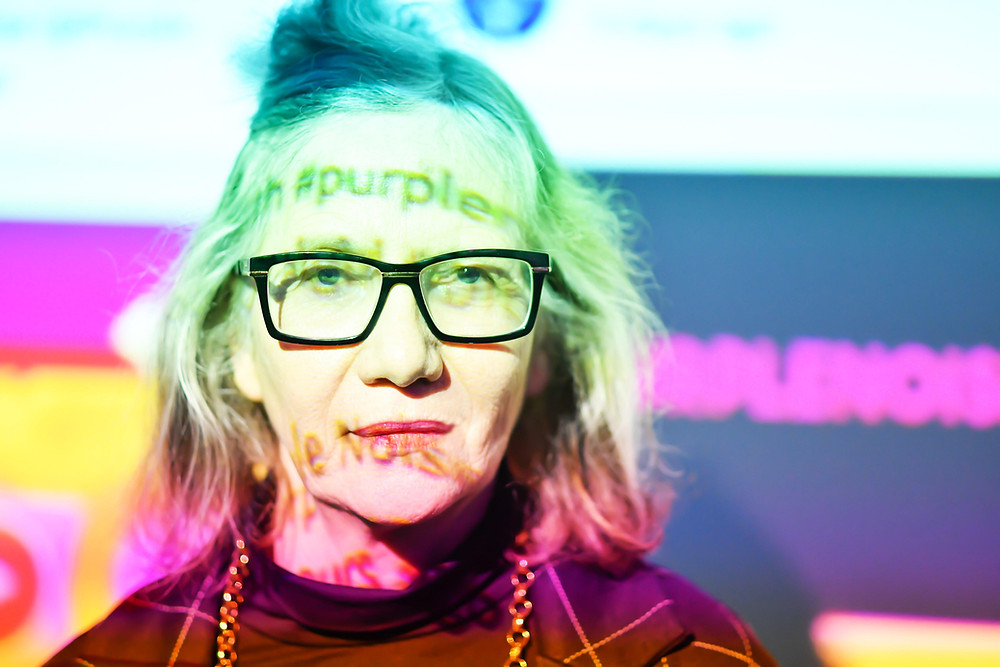

All About Cornelia Sollfrank

- An artist, interdisciplinary researcher and educator
- Studied painting in the academy of Fine Arts at the University of Fine Arts in Hamburg
- Founding member of the collectives frauen-und-technik (Women and Technology, 1992) and Innen (1994)
- Ran the world-wide cyberfeminist network Old Boys Network (1997-2001)
- Co-founder and editor of the online magazine for art and criticism THE THING Hamburg (2006)
“ONE SHOULD ALWAYS BE AWARE OF JUST HOW ELITIST AND QUESTIONABLE THE CHOICES MADE BY A MUSEUM ACTUALLY ARE.”
— CORNELIA SOLLFRANK